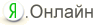

|
||||||||
|
|
Punto Switcher |
Автопереключение раскладкиПереключение с одного языка на другой автоматически или горячей клавишей.
Коррекция текстаРабота с выделенным текстом и текстом в буфере — исправление раскладки, регистра и транслитерация.
Горячие клавишиВозможность расширить стандартные комбинации клавиш для смены раскладки.
|
АвтозаменаВозможность назначить сочетание букв для автоматического ввода часто употреблямых слов.
Озвучивание событийЗвуковое оформление работы с клавиатурой.
|
Что нового в Punto Switcher 3.1
|
Вы можете установить также  |
||
|
||